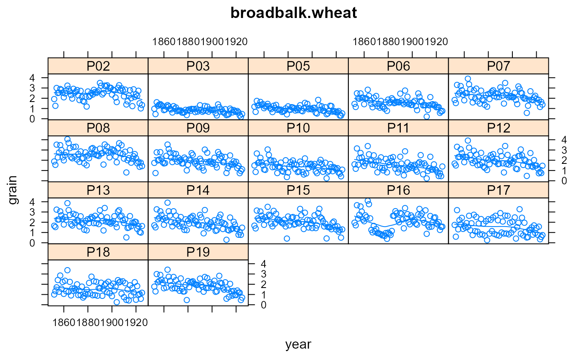
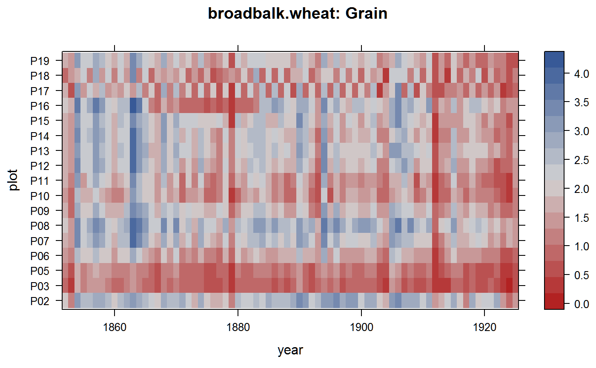

broadbalk.wheat.RdLong term wheat yields on Broadbalk fields at Rothamsted.
A data frame with 1258 observations on the following 4 variables.
yearyear
plotplot
graingrain yield, tonnes
strawstraw yield, tonnes
Note: This data is only 1852-1925. You can find recent data for these experiments at the Electronic Rothamsted Archive: https://www.era.rothamsted.ac.uk/
Rothamsted Experiment station conducted wheat experiments on the Broadbalk Fields beginning in 1844 with data for yields of grain and straw collected from 1852 to 1925. Ronald Fisher was hired to analyze data from the agricultural trials. Organic manures and inorganic fertilizer treatments were applied in various combinations to the plots.
N1 is 48kg, N1.5 is 72kg, N2 is 96kg, N4 is 192kg nitrogen.
| Plot | Treatment |
| 2b | manure |
| 3 | No fertilizer or manure |
| 5 | P K Na Mg (No N) |
| 6 | N1 P K Na Mg |
| 7 | N2 P K Na Mg |
| 8 | N3 P K Na Mg |
| 9 | N1* P K Na Mg since 1894; 9A and 9B received different treatments 1852-93 |
| 10 | N2 |
| 11 | N2 P |
| 12 | N2 P Na* |
| 13 | N2 P K |
| 14 | N2 P Mg* |
| 15 | N2 P K Na Mg (timing of N application different to other plots, see below) |
| 16 | N4 P K Na Mg 1852-64; unmanured 1865-83; N2*P K Na Mg since 1884 |
| 17 | N2 applied in even years; P K Na Mg applied in odd years |
| 18 | N2 applied in odd years; P K Na Mg applied in even years |
| 19 | N1.5 P and rape cake 1852-78, 1879-1925 rape cake only |
D.F. Andrews and A.M. Herzberg. 1985. Data: A Collection of Problems from Many Fields for the Student and Research Worker. Springer.
Retrieved from https://lib.stat.cmu.edu/datasets/Andrews/
Broadbalk Winter Wheat Experiment. https://www.era.rothamsted.ac.uk/index.php?area=home&page=index&dataset=4
# \dontrun{ library(agridat) data(broadbalk.wheat) dat <- broadbalk.wheat libs(lattice) ## xyplot(grain~straw|plot, dat, type=c('p','smooth'), as.table=TRUE, ## main="broadbalk.wheat") xyplot(grain~year|plot, dat, type=c('p','smooth'), as.table=TRUE, main="broadbalk.wheat") # yields are decreasing# See the treatment descriptions to understand the patterns redblue <- colorRampPalette(c("firebrick", "lightgray", "#375997")) levelplot(grain~year*plot, dat, main="broadbalk.wheat: Grain", col.regions=redblue)# }